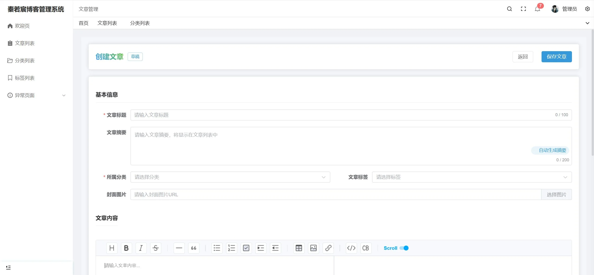

博客后台管理系统
项目概述
这是一个基于Vue3和TypeScript开发的现代化博客后台管理系统，采用Element Plus组件库构建用户界面，实现了文章管理、用户管理、数据统计等核心功能。系统采用RBAC权限管理，支持多角色权限控制，确保系统安全性。
项目亮点
- 基于Vue3 + TypeScript，代码类型安全
- 采用Vite构建，开发体验优秀
- 完善的权限管理系统
- 丰富的数据可视化展示
- 支持主题自定义和暗黑模式
核心功能
- 文章管理：支持Markdown编辑、草稿箱、定时发布
- 用户管理：用户信息管理、角色分配、权限控制
- 数据统计：访问量统计、用户增长、文章热度分析
- 系统设置：站点配置、主题设置、备份还原
- 评论管理：评论审核、回复、垃圾评论过滤
- 资源管理：图片上传、文件管理、CDN配置
技术栈
- 核心框架：Vue3 + TypeScript
- UI框架：Element Plus
- 状态管理：Pinia
- 构建工具：Vite
- HTTP请求：Axios + 请求封装
- 代码规范：ESLint + Prettier
项目展示

后台首页 - 数据统计
文章管理 - 列表页面

文章编辑 - Markdown编辑器
系统设置 - 权限管理
×